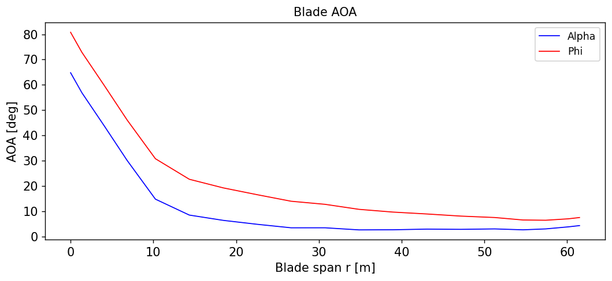
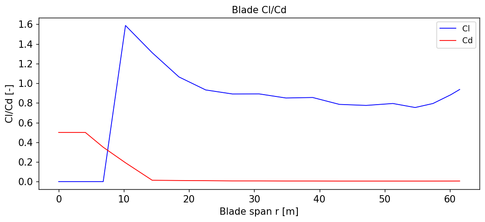
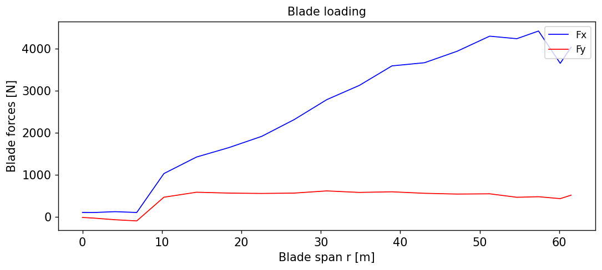

Postprocess openfast results for sectional loads
# Add any possible locations of amr-wind-frontend here
amrwindfedirs = ['/projects/wind_uq/lcheung/amrwind-frontend/',
'/ccs/proj/cfd162/lcheung/amrwind-frontend/']
import sys, os, shutil, io
for x in amrwindfedirs: sys.path.insert(1, x)
import postproamrwindsample_xarray as ppsample
import postproengine as ppeng
import numpy as np
import pandas as pd
import matplotlib.pyplot as plt
%matplotlib inline
/ascldap/users/lcheung/.local/lib/python3.9/site-packages/pandas/core/computation/expressions.py:21: UserWarning: Pandas requires version '2.8.4' or newer of 'numexpr' (version '2.8.1' currently installed).
from pandas.core.computation.check import NUMEXPR_INSTALLED
/ascldap/users/lcheung/.local/lib/python3.9/site-packages/pandas/core/arrays/masked.py:60: UserWarning: Pandas requires version '1.3.6' or newer of 'bottleneck' (version '1.3.4' currently installed).
from pandas.core import (
# Load ruamel or pyyaml as needed
try:
import ruamel.yaml as yaml
print("# Loaded ruamel.yaml")
useruamel=True
loaderkwargs = {'Loader':yaml.RoundTripLoader}
dumperkwargs = {'Dumper':yaml.RoundTripDumper, 'indent':4, 'default_flow_style':False}
except:
import yaml as yaml
print("# Loaded yaml")
useruamel=False
loaderkwargs = {}
dumperkwargs = {'default_flow_style':False }
if useruamel: Loader=yaml.load
else: Loader=yaml.safe_load
# Loaded ruamel.yaml
def stringReplaceDict(s, dreplace):
outstr = str(s)
for k, g in dreplace.items():
outstr=outstr.replace(k, g)
return outstr
def makeSecBladeDF(csvfile, rpts, bladekeysdict):
"""
Make a dictionary with blade sectional loading quantities
"""
df=pd.read_csv(csvfile, comment='#',)
bladedf = {}
bladedf['rpts'] = rpts
for k, bladekeys in bladekeysdict.items():
alphadat = [float(df[k][0]) for k in bladekeys]
bladedf[k] = alphadat
return bladedf
# Create a list of blade variables
Npts = 19
prefix='AB1N'
# Create a dictionary with keys that need to be pulled out
suffixkeys = ['Alpha', 'Phi', 'Cl','Cd', 'Fx','Fy']
blistdict = {}
for suffix in suffixkeys:
blistdict[suffix] = [prefix+('%03i'%i)+suffix for i in range(1, Npts+1)]
blist = []
for k, g in blistdict.items():
blist += g
bliststr = '[Time, '+', '.join(blist)+']'
# Get the blade stations
rundir = '/pscratch/lcheung/HFM/exawind-benchmarks/NREL5MW_ALM_BD_OFv402_ROSCO.redo'
bladefile = rundir+'/T0_NREL5MW_v402_ROSCO/openfast/5MW_Baseline/NRELOffshrBsline5MW_AeroDyn_blade.dat'
bladedat = np.genfromtxt(bladefile, skip_header=6, skip_footer=2)
replacedict={'RUNDIR':rundir,
'RESULTSDIR':'../results/OpenFAST_v402_out',
'BLADEVARS':bliststr,
}
yamlstring="""
globalattributes:
verbose: False
udfmodules: []
executeorder:
- openfast
trange: &trange [300, 900] # Note: add 15,000 sec to get AMR-Wind time
openfast:
# For FSI case
- name: NREL5MW_SECLOADS
filename: RUNDIR/T0_NREL5MW_v402_ROSCO/openfast-cpp/5MW_Land_DLL_WTurb_cpp/5MW_Land_DLL_WTurb_cpp.out
vars: BLADEVARS
output_dir: RESULTSDIR
csv: # Store information to CSV files
individual_files: False
operate:
operations:
- mean
trange: *trange
"""
f = io.StringIO(stringReplaceDict(yamlstring, replacedict))
yamldict = Loader(f, **loaderkwargs)
# Run the driver
ppeng.driver(yamldict, verbose=True)
Initialized openfast
Running openfast
NREL5MW_SECLOADS /pscratch/lcheung/HFM/exawind-benchmarks/NREL5MW_ALM_BD_OFv402_ROSCO.redo/T0_NREL5MW_v402_ROSCO/openfast-cpp/5MW_Land_DLL_WTurb_cpp/5MW_Land_DLL_WTurb_cpp.out
Initialized csv inside NREL5MW_SECLOADS
Executing csv
Initialized operate inside NREL5MW_SECLOADS
Executing operate
d = makeSecBladeDF(replacedict['RESULTSDIR']+'/NREL5MW_SECLOADS_mean.csv', bladedat[:,0], blistdict)
pddf = pd.DataFrame(d).to_csv(replacedict['RESULTSDIR']+'/NREL5MW_SECLOADS_mean_rpts.csv', index=False,float_format='%.15f')
Plot the blade loading
yamlstring="""
globalattributes:
verbose: False
udfmodules: []
executeorder:
#- openfast
- plotcsv
trange: &trange [300, 900] # Note: add 15,000 sec to get AMR-Wind time
plotcsv:
- name: Blade AOA
xlabel: 'Blade span r [m]'
ylabel: 'AOA [deg]'
title: 'Blade AOA'
figsize: [10,4]
legendopts: {'loc':'upper right'}
savefile: ../results/images/OpenFAST_T0_AOA.png
csvfiles:
- {'file':'RESULTSDIR/NREL5MW_SECLOADS_mean_rpts.csv', 'xcol':'rpts', 'ycol':'Alpha', 'lineopts':{'color':'b', 'lw':1, 'linestyle':'-', 'label':'Alpha'}}
- {'file':'RESULTSDIR/NREL5MW_SECLOADS_mean_rpts.csv', 'xcol':'rpts', 'ycol':'Phi', 'lineopts':{'color':'r', 'lw':1, 'linestyle':'-', 'label':'Phi'}}
- name: Blade AOA
xlabel: 'Blade span r [m]'
ylabel: 'Cl/Cd [-]'
title: 'Blade Cl/Cd'
figsize: [10,4]
legendopts: {'loc':'upper right'}
savefile: ../results/images/OpenFAST_T0_ClCd.png
csvfiles:
- {'file':'RESULTSDIR/NREL5MW_SECLOADS_mean_rpts.csv', 'xcol':'rpts', 'ycol':'Cl', 'lineopts':{'color':'b', 'lw':1, 'linestyle':'-', 'label':'Cl'}}
- {'file':'RESULTSDIR/NREL5MW_SECLOADS_mean_rpts.csv', 'xcol':'rpts', 'ycol':'Cd', 'lineopts':{'color':'r', 'lw':1, 'linestyle':'-', 'label':'Cd'}}
- name: Blade loading
xlabel: 'Blade span r [m]'
ylabel: 'Blade forces [N]'
title: 'Blade loading'
figsize: [10,4]
legendopts: {'loc':'upper right'}
savefile: ../results/images/OpenFAST_T0_FxFy.png
csvfiles:
- {'file':'RESULTSDIR/NREL5MW_SECLOADS_mean_rpts.csv', 'xcol':'rpts', 'ycol':'Fx', 'lineopts':{'color':'b', 'lw':1, 'linestyle':'-', 'label':'Fx'}}
- {'file':'RESULTSDIR/NREL5MW_SECLOADS_mean_rpts.csv', 'xcol':'rpts', 'ycol':'Fy', 'lineopts':{'color':'r', 'lw':1, 'linestyle':'-', 'label':'Fy'}}
"""
f = io.StringIO(stringReplaceDict(yamlstring, replacedict))
yamldict = Loader(f, **loaderkwargs)
# Run the driver
ppeng.driver(yamldict, verbose=True)
Initialized plotcsv
Running plotcsv
Saving ../results/images/OpenFAST_T0_AOA.png
Saving ../results/images/OpenFAST_T0_ClCd.png
Saving ../results/images/OpenFAST_T0_FxFy.png



# Write out the notebook to a python script
!jupyter nbconvert --to script OpenFAST_SectionalLoading.ipynb
with open('OpenFAST_SectionalLoading.py', 'r') as f:
lines = f.readlines()
with open('OpenFAST_SectionalLoading.py', 'w') as f:
for line in lines:
if "'matplotlib', 'inline'" in line: line = 'plt.show(block=False)'
if 'nbconvert --to script' in line:
break
else:
f.write(line)
[NbConvertApp] Converting notebook OpenFAST_SectionalLoading.ipynb to script
[NbConvertApp] Writing 5883 bytes to OpenFAST_SectionalLoading.py